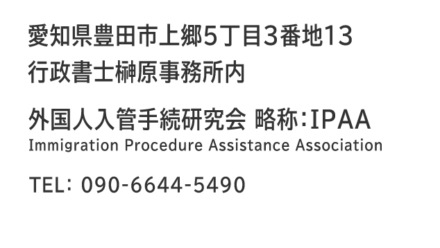

活動記録 2026.00.00 定例会（仮）
- 永住可申請
- 在留期間更新許可申請
- 帰化申請
活動記録 2026.04.10 定例会
- 永住許可申請・収入要件について
- 永住許可申請・告示5号定住者の場合について
- 永住許可申請・5年以上前に長期出国期間がある場合
- 永住許可申請・身元保証人について
- 永住許可申請・隠れた子の存在が判明した場合
- 永住許可申請・非嫡出子の場合
- 変更許可申請・短期滞在中に認定証明書が交付された場合（就労系・身分系）
- 更新許可申請・「経営・管理」長期出国について
- 更新許可申請・「経営・管理」店舗付住宅の取扱いについて
- 更新許可申請・「家族滞在」海外留学中の子の場合
- オンライン申請・新システムの変更点
- オンライン申請・追加資料の任意提出について
- オンライン申請・受理時刻、審査回数など
- 就労系・2026.04.15～「技術・人文知識・国際業務」における日本語能力要件
- 就労系・海外留学中の子「家族滞在」が日本で就職内定した場合
- 身分系・フィリピンのCOFセミナーについて
- その他・査証に記載された記号と申請入管の関係
- その他・開示請求時の一部手順の省略について
活動記録 2026.03.13 定例会
- 永住申請・取得永住の申請が受理される期限について
- 変更申請・「経営・管理」で確保する事業所が小面積の場合の可否について
- 変更申請・「特定技能」から「技術・人文知識・国際業務」への在留資格変更可否について
- 更新申請・申請後に住所変更した場合の在留カードの記載について
- 更新申請・特例期間を過ぎて在留資格申請の許可を受ける場合の有無について
- 在特申請・川崎市内在住者の在特申請の提出先について
- 帰化申請・2026.04.01以降の帰化申請の在留要件について。日本語テストの実施時期の変更について
- 特定技能・登録支援機関登録申請の動向ついて
- 就労系・2026.03.09以降の派遣社員の申請。雇用契約期間と付与される在留期間との関係について
- その他・短期査証申請書類の作成を受任した場合の職務上請求書の使用可否について
- その他・米国＆イスラエル・イラン戦争（2026.02.28～）の影響について
在留資格認定証明書交付後の本国査証申請、短期滞在者の更新申請など
過去の活動記録
過去のホームページ
関係官庁等
ガイドライン等
団体の基本情報
